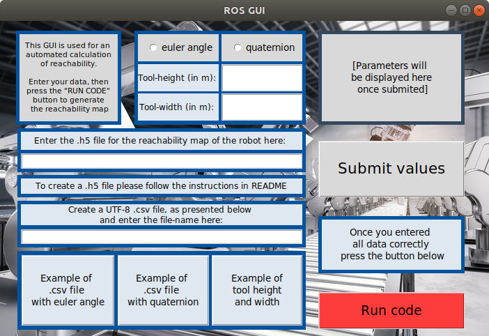

How to Use the Application
How to Use the Application:
- Create the reachability map for your robot and saves it in folder "maps" of this project
- Create a .csv file for the robot position and task positions (in global coordinate system) as instructed in the GUI, saves it in folder "code"
- Open the UI from folder "code"
cd code
python3 MAA_GUI.py

and insert the required data:
- Select between quaternion and euler;
- The tool height and length are measured in meters;
- The map should be saved on the "maps" inside of spp-maa project folder. And insert their names in the GUI (not their location);
- Requirements for the input .csv data of tasks:
- The robot position and the task positions have the form (x,y,z,a,b,c) in which x,y,z are the coordinates and a,b,c, if you are using euler angles.
- If you are using quaternion: (x, y, z, Xq, Yq, Zq, Wq) where x ,y ,z are the coordinates and Xq, Yq, Zq, Wq are the quaternion values.
- These positions are measured in meter and relative to the global coordinate system.
- The robot position and the task positions have the form (x,y,z,a,b,c) in which x,y,z are the coordinates and a,b,c, if you are using euler angles.
- In folder "result", you can find the calculated result in the result.csv file (default case) and its plot in the result.svg file.
On video below, you can see an example of usage of the GUI.